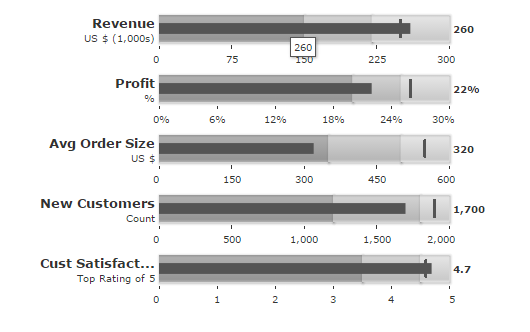
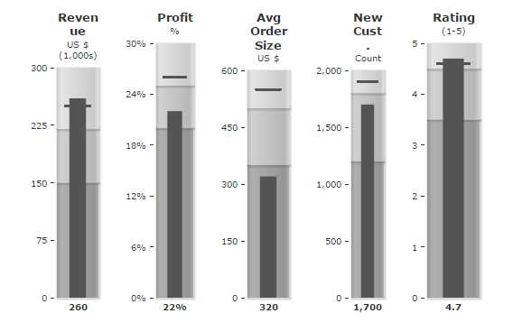

21.FwBulletChart
FwBulletChart는 FusionWidget Wrapper 컴포넌트입니다. FusionWidgets의 데이터는 실제 차트에 보여줄 값과 스타일 옵션들이 하나로 결합되어 있는 형태입니다. WebSquare5에서는 이를 분리하여 차트를 쉽게 Customizing 할 수 있도록 API를 지원합니다.
21.1Property
Property | Description |
|---|---|
chartType | hbullet / vbullet 이상 두가지 타입을 제공합니다. |
ref | binding할 dataList를 넣습니다. |
targetNode | FwBulletChart는 FusionWidget Wrapper 컴포넌트입니다. FusionWidgets의 데이터는 실제 차트에 보여줄 값과 스타일 옵션들이 하나로 결합되어 있는 형태입니다. |
valueNode | seriesType이 simple 일 경우, FwBulletChart의 value 데이터로 사용할 DataCollection의 column의 ID값. |
21.2브라우저 캡쳐화면

[그림 21-1]01

[그림 21-2]02
21.3주의사항 및 Tip
FwBulletChart의 디자인은 css 로 변경하는것이 아니라 차트가 제공하는 옵션에서 정의합니다. 변경방법은 기술지원에서 문의바랍니다.
DataCollection 만들고 디자인뷰에서 해당컴포넌트를 더블클릭하여 ref, labelNode, valueNode 등 연결해야 됩니다.